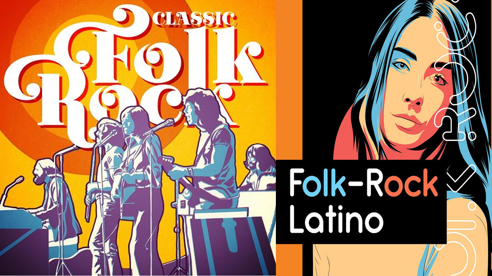

FOLK ROCK
El folk rock, en un sentido amplio, es un género musical que combina elementos de la música folk, el blues y el rock. Sin embargo, el término se suele usar preferentemente, aunque no exclusivamente, en referencia a la música de fusión surgida en los Estados Unidos y en el Reino Unido, a mediados de los años sesenta, resultado de la incorporación de elementos del rock, sobre todo del rock de la Costa Oeste, y especialmente en el terreno instrumental y rítmico, a la música de tradición folclórica local. Los pioneros de este género son los Birds, influenciados por Bob Dylan.
Entre sus representantes más destacados se encuentran Bob Dylan, the byrds, the mamas & the papas, Simon & garfunkei, Neil Young, Donovan, Nick drake. Los instrumentos más comunes para este tipo de música son la guitarra eléctrica, bajo, batería, saxofón y el sintetizador.
Dentro de sus orígenes e influencias se pueden mencionar estilos y géneros tan variados como el rock and roll clásico, el blues rock, el garage rock, el rock psicodélico y la música folk pero, desde diferentes puntos de vista, fue eliminando elementos externos y se constituyó como identidad propia.
